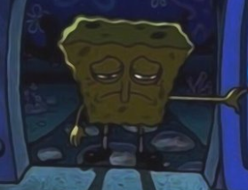
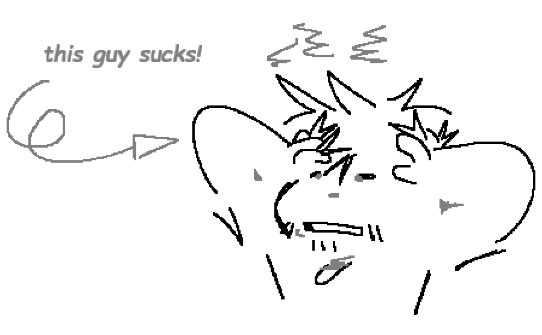

Sunglasses Updates!
10/6/26
Donald
Man, im already falling behind on blogs!
If i can be frank, this week has not been kind to me, but we need a blog.

And i wanna explain how progress is from my side of things!Now i wont be SUPER mopey on here, im not gonna be some loser that just vents all his woes on his silly website. Lets just get that out the way, and get to BUSINESS.
Lets talk about HOMESTEAD (2012) and Minesweeper first, id like to have some updates on those two. As it stands with my progress, im pretty far with Minesweeper, HOMESTEAD not so much. It really does take alot to make a video game. So now lets get into some specifics!
"HEY, WHERES  ?"
?"
I can estimate nothing at this current time, as im not even really the sole primary artist! That title i feel is now shared with Ash, they're a very very talented artist who i would even go as far as to say is one of the best that i know! The sunglasses team has only really had me and 1 departed member from its fairly long lifespan as an artist, its honestly refreshing to know that we have a reliable artist working with us. If i can be frank, it really does take alot of weight off my shoulders.
Any plans for another game after these 2?
Eh... Not yet.
Ok ill be serious, at this current point in time our current focus as a team is to focus on our objective content when need be. The idea of a new game is awesome, yes, however... Its simply not quite in our cards yet! But rest assured that we will have more content than these 2 games whenever they may be.
Whats taking so long with Minesweeper?

Well, you caught me.
Guys if i can be blunt, im such a bum, Kayla has said "ill work on it when i get off my A**" many many times. But in reality its really me guys, i just havent finished all the sprites and concepts which is preventing Kayla from doing her job right. As of current im in a sort of road block with Minesweeper, it just feels difficult to try and get everything in my mind with it. ESPECIALLY recently, but for unrelated reasons, life is just getting in the way.
Well Donnie, beyond all these games, whats going on?
Well, to cap things off ill say this, my birthday is soon! (October 10th) Its been a joy to think about going out with my friends and all, since after this birthday, im afraid i wont see them much anymore. All of my friends are going to college, and due to that it looks like im gonna get left behind after this year working on some other stuff. But its not all bad, im gonna be 18 and im gonna be an adult and all, which feels refreshing.
Anyways, im gonna be working hard on getting all this stuff to you guys, be sure to be on the lookout for more updates!